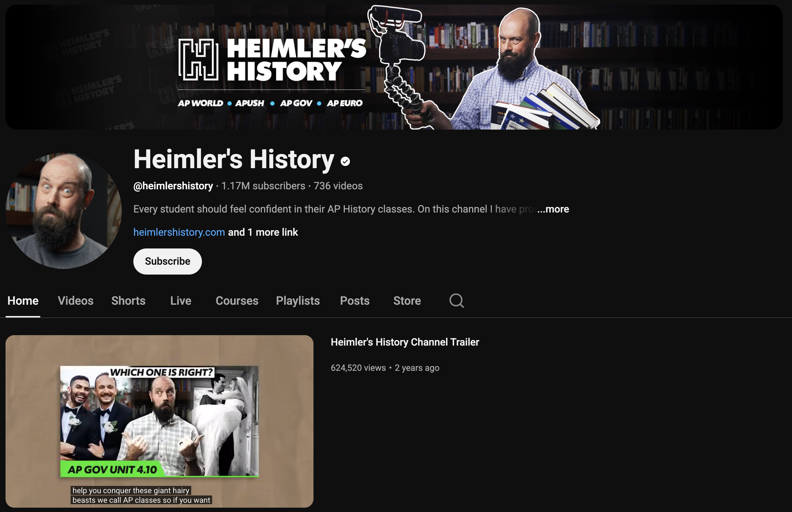
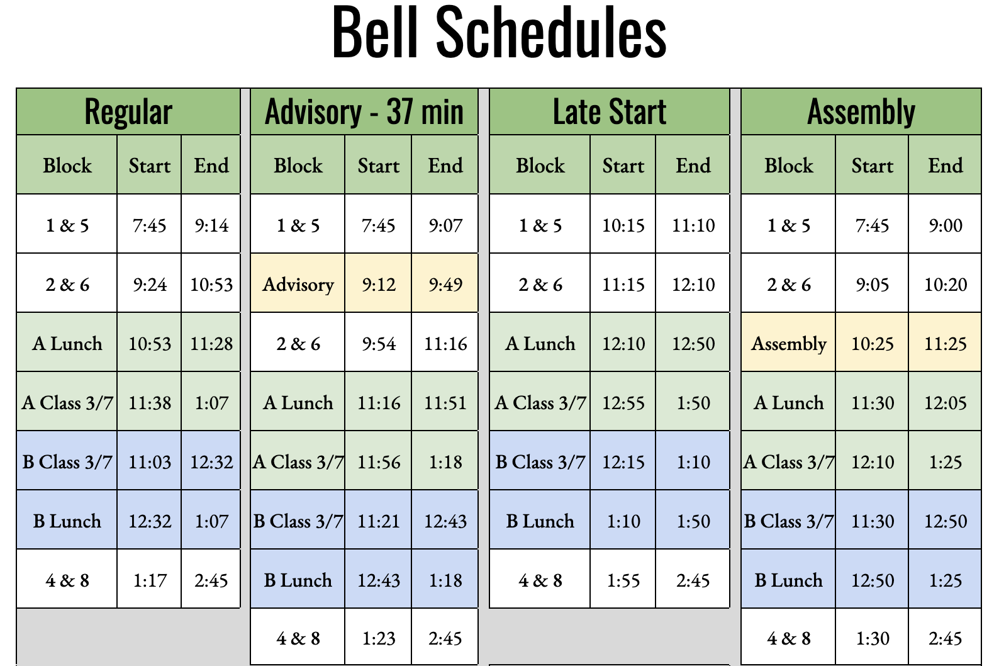
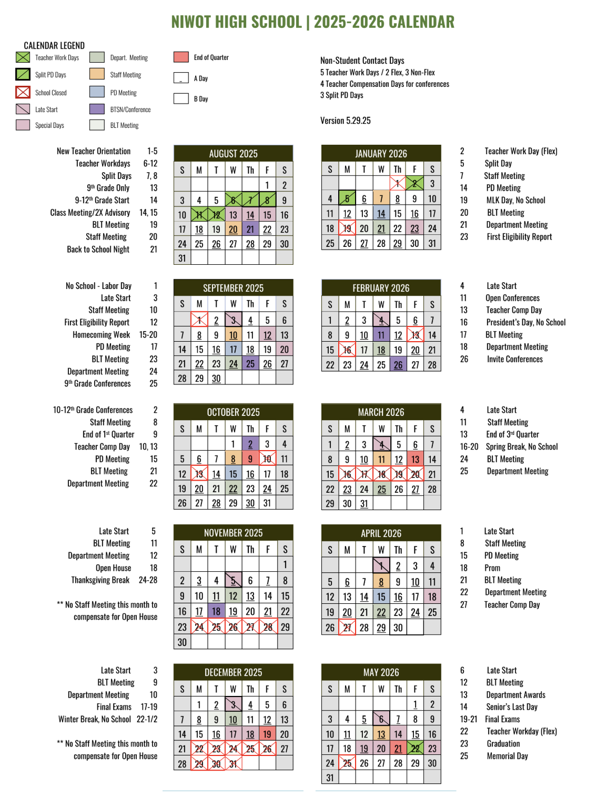
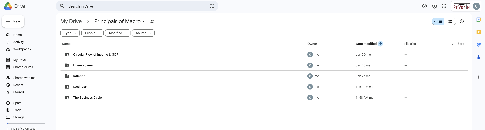

Quality Standard IV
Teachers demonstrate professionalism through ethical conduct, reflection, and leadership.
Element A – Teachers demonstrate high standards for professional conduct.
I demonstrate high standards of professional conduct through consistent participation in the school community and adherence to administrative expectations. I prioritize attendance at all staff and departmental meetings, using these forums to stay informed on school-wide policies and to contribute to collective goal-setting. My reliable presence ensures that my instructional practices remain aligned with the mission and operational standards of the institution.
Beyond meeting attendance, I model professionalism by maintaining an ethical and respectful rapport with colleagues and stakeholders. By meeting administrative deadlines and participating in collaborative planning, I uphold the integrity of the teaching profession. This commitment to reliability and school-wide involvement fosters a stable, high-functioning environment for both students and staff.
Element B – Teachers link professional growth to their professional goals.

I align my professional development with long-term career goals by expanding my content expertise across multiple disciplines. Currently, I am engaged in a self-directed study of World and U.S. History to prepare for the Social Studies Praxis exam. This goal is driven by a desire to become a more well-rounded educator capable of teaching interdisciplinary courses and supporting the Social Studies department in a broader capacity.
This commitment to continuous learning ensures my instructional perspectives remain diverse and comprehensive. By mastering new subject matter, I am better equipped to help students make connections between economic theories and the historical contexts that shaped them. This proactive approach to professional growth directly enhances my versatility as a teacher and my ability to contribute to the school’s academic mission.
Element C – Teachers respond to a complex, dynamic environment.


I demonstrate flexibility and responsiveness by effectively managing the logistical shifts inherent in a high school environment. Whether navigating modified bell schedules for assemblies, state testing windows, or unexpected drills, I proactively adjust my pacing and lesson structures to ensure instructional continuity. By maintaining an adaptable calendar, I minimize the impact of these interruptions, ensuring that students remain focused and that essential curriculum targets are met despite changes to the daily routine.
This responsiveness extends to the instructional level, where I pivot my approach based on real-time classroom needs. If a schedule change reduces a class period, I prioritize high-impact activities—such as data analysis or collaborative work—while moving supplementary content to digital platforms. This ability to maintain a stable learning environment within a dynamic school schedule reflects my commitment to professional reliability and student success.
Element D – Teachers demonstrate leadership in the school, the community, and the teaching profession.

I demonstrate leadership within the school community by proactively sharing my instructional resources and lesson plans with colleagues to support departmental consistency. By maintaining an open-access repository of my materials I provide my peers with ready-to-use, high-rigor content that integrates modern technology into the classroom. This collaborative approach not only fosters a culture of resource-sharing within the Social Studies department but also helps elevate the standard of data-driven instruction across the school.